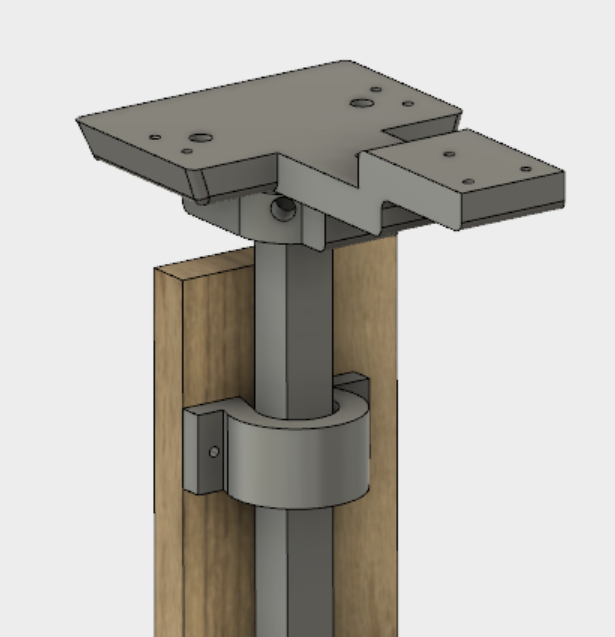
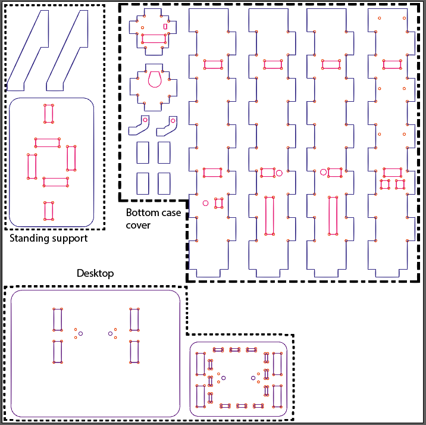
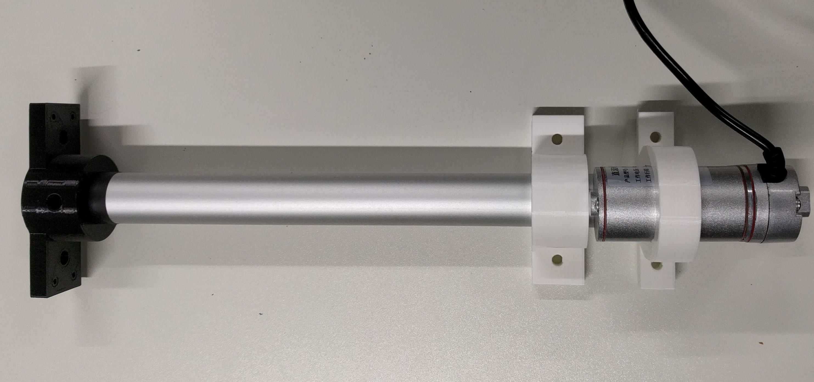
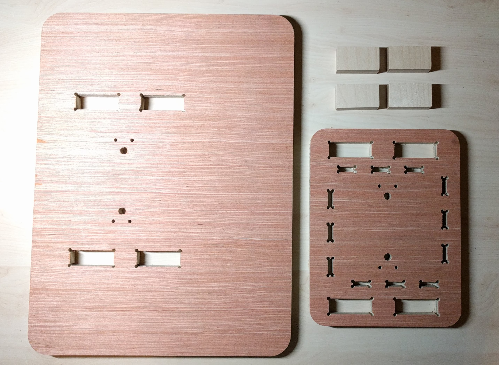
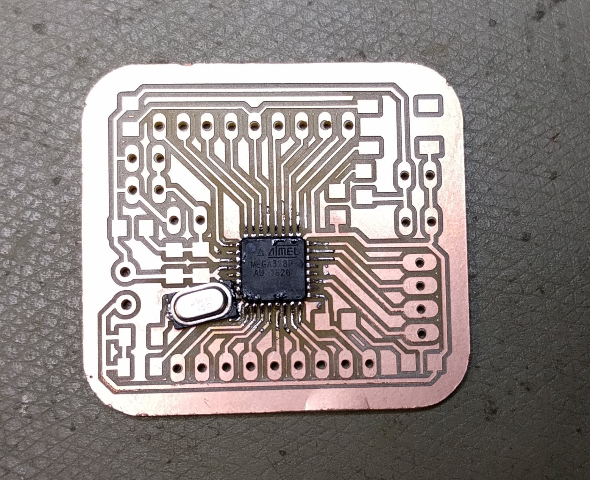

Documentation Final Project
Date: 03.01.2018 - 31.01.2018
1. Project Description
For the final project, I want to build a small personal desk with controllable adjustable height, which also reminds me to switch my posture between sitting and standing after a certain time interval.

Motivation: The idea came to me because of the fact that I find myself as well as many people around me sitting and working on the computer for a big part of the day. Many of the times when I need to focus on the work I forget to move around and get active. Thus I find it important to have some kind of friendly reminder to tell me that I should start moving after some time of idly sitting. Then I think of combining this kind of reminder with my actual working space, thus the final idea of a personal working desk with button interface to raise it up or bring it down and acoustic buzzer to remind me to change posture after some time interval.
While searching around the Internet for inspiration and the components that I should use, I found some commercially available big table with adjustable height for around 1000 Euro or more. But of course from these products it is not clear how the table is constructed. In the end I found a similar project on Instructable which costs about 200 USD. From this Instructable I learned that a Linear Actuator is the perfect part to be used for my project. However, this desk is still a big one which uses 2 actuators and thus the problem of synchronizing them arises. For my personal desk I only need 1 actuator. Knowing this, I started to sketch out the idea for my desk and order the required components.
The required components can be divided into following parts: Materials for making the desk (wood), electronic components, materials and parts for making my own motor controller board and microcontroller board, power supply components. The complete BOM list can be downloaded in Section 4 - Download resources. According to my calculations, the project costs around 90 Euro in total.
The making process (in timely manner) of the desk is as followed:
- Sketch the overall design and order required components
- Test H-Bridge motor controller circuit on breadboard
- Test microcontroller and electronics components on breadboard
- Design PCB for H-Bridge controller and adjust microcontroller PCB design from Week 9
- Design desk frame in 2D and 3D modelling softwares
- Mill and populate PCBs, test and upload final Arduino sketches
- Test cut of desk frame using Laser cutter and CNC machine, correct design errors
- Final cut of desk frame
- Mount components to frame, put parts together
For this project, I have combined almost all of the digital fabrication techniques learned during the course including:
- 2D Design & laser cutting & CNC milling
- 2D designed & laser cut electronics box
- 2D designed & CNC milled desk body
- 3D Modelling & 3D Printing
- 3D designed & 3D printed support structures for mounting linear actuator to desk's leg and top
- Electronics design & Electronics production
- FabLab-made H-bridge single motor controller board to control linear actuator's direction
- FabLab-made ATMEGA328P-based, Arduino-compatible microcontroller board
- Input Devices
- Push button to tell actuator to go up or down
- Potentiometer to adjust timer's value
- Output devices
- Linear actuator which provides the main function of the desk
- OLED display to shows timer value
- Acoustic buzzer to remind me to change posture once the timer is finished
- RGB LED (Neopixel) to display status of system
- Embedded Programming
- Networking (I2C communication between microcontroller and OLED)
I wanted to build this desk because I think it will be very useful for me and would really like to use it while working. It would be nice to share this project as an open source project where everyone can recreate it and use it for their own benefit. Thus, I decided to share this project under the Creative Commons Attribution-ShareAlike 4.0 International License.
A one-minute video describing the project briefly can be found here
2. Making process
2.1. 2D Sketch & 3D model the desk's overall design
In order to sketch a rough design for the desk, I needed to consider the dimensions of the desk's main component - the linear actuator:
Left: Linear Actuator, Right: Corresponding dimensions (in mm)
Based on this, the design of the desk was sketched out and also modified several times during the making process to meet other requirements:
Left: First draft sketch of desk with dimensions, Right: Final sketch with dimensions after several modifications
Since the actuator has a maximum width of 75mm and I want to use 18mm plywood for the outer case covering the bottom part of the actuator, the outer case will have a total width of 75+2*18 = 111mm. With considerations of the other dimensions, I designed the desk parts in 2D design software such as Adobe Illustrator and Rhinoceros, exported the files as .DXF then imported them in Fusion 360 to put them together to check if they fit.
In order to mount and fix the actuator to the desk I have 4 supporting structures:
- One at the bottom of the actuator where it will rest on a platform and will be fixed by screw onto the 2 hooks which connect the platform to one of the bottom case cover's wall
- One at the lower end and one at the upper end of the actuator's stroke length to stabilize it, especially to prevent it from shaking when the stroke is extending or withdrawing
- One at the top of the stroke length to hold the desktop in place:
Left: Bottom side view without actuator model, Right: Top side view with actuator in mounting position

Left: Top support structure, Right: Top support structure in mounting position
The final complete 2D design of the desk looks like this:
I also tried to model the full desk body in Fusion 360:
Left: Model without desktop, Right: Full desk model
2.2. Test the electronics components
2.2.1. Test H-Bridge motor controller circuit on breadboard
The most important part of this project is to control the Linear Actuator's direction thus I started testing it first. Using a readily available H-bridge motor controller and the same setup as described in Week 10: Output devices I could control the actuator's direction with 2 push buttons. However, the trouble comes when I want to build my own H-bridge circuit. The reason is because the available H-bridge module is transistor-based and thus can only provide a current of up to 2A, meanwhile the linear actuator needs upto 3A to function. Hence I need to make a MOSFET-based controller. The schematic of a general H-bridge motor controller using MOSFETs looks like this:
However, due to the complexity of the circuit, when I tried to wire it up the first time, I made wrong connections and it did not work. One of the N-channel MOSFET was getting warm, but luckily it did not break. Thus I learned that I should start testing smaller portions of the circuit before putting everything together. First, I tested the warmed MOSFET again alone to check if it still works. Then, I wired up a half-bridge controller following this schematic:
The simplified circuit worked perfectly:
At this point I could extend the circuit to test the full H-bridge again:
And this is a snapshot of the Arduino sketch for the full H-bridge controller, which can be downloaded below in Section 4.
There are several differences between this sketch and the sketch from Week 10. One is the use of 2 buttons instead of 1 to control the direction of the motor/ actuator. In this sketch, I use 1 "UP" button to tell the actuator to go up or to stop going up, and 1 "DOWN" button to tell it to go down or to stop going down. For example, when "UP" button is pressed once, actuator goes up and when "UP" is pressed again it stops the motion. Also, when the actuator is for example going up and "DOWN" is pressed, it will directly change direction and go down. As I tested, the actuator seems to change direction very smoothly.
Another difference is of course because now I am using my own H-bridge controller instead of the ready-made module, the pins have to be controlled in a different manner and I only have to change them accordingly.
2.2.2. Test other electronics components on breadboard
Other electronics components such as potentiometer, OLED, buzzer, Neopixel have been experimented with in previous weeks. For the final project, I only need to adjust the code for the Neopixel a little bit, and add an extension to the OLED & potentiometer code for it to work with the buzzer and the timer.
The purpose of the Neopixel in this final project is to display the status of the actuator as followed:
Neopixel is green: Actuator stands by (no motion)
Neopixel is yellow: Actuator is going up
Neopixel is blue: Actuator is going down
For the timer function of the desk, which means the buzzer will beep gently once a user-defined time interval is reached, I downloaded and installed the Countimer library and integrated it into my previous sketch from Week 10. The modified sketch can be download in Section 4.
The last part of testing the electronics is to provide the whole system with a single source of power. Thus, I ordered the 12V 3.33A power supply which provides 12V directly to the motor and the motor controller's board, and use the Step-down converter to get out 5V for the microcontroller board.
Since the step-down converter I have is an adjustable one, I have to tune the SMD potentiometer on the PCB to get 5V out while providing 12V input:
After making sure that all electronics components are working, I soldered wires and pin headers to them so that they can later be connected to the microcontroller boards:
Left to right, Top to Bottom: Button with 10K pull-down resistor, Buzzer, Potentiometer, Step-down converter, AC Switch with DC jack for power input
2.3. PCBs designing & production
2.3.1. Design & make PCB for H-bridge motor controller
As practiced in previous weeks, I designed my H-bridge PCB in EAGLE:
Top: schematic of single H-bridge controller in EAGLE, Bottom: Board layout in EAGLE
The same procedure like in Week 9 is used to produce the PCB using the Roland MDX40. Following are the settings for the milling and cutting jobs:
2.3.2. Design & make PCB for microntroller
For the final project, I have to modify my microcontroller from Week 9 by adding a 16MHz crystal and 2x22pF capacitors for the crystal so that the board can use 5V input, basically in order to provide sufficient voltage for activating the MOSFETs which requires a threshold voltage of 2-4V.
Top: partial datasheet of IRFZ24N N-channel MOSFET, Bottom: partial datasheet of IRF9Z34N P-channel MOSFET
I also added a 3.5mm terminal block to provide power to the board from the step-down converter, and additional power (VCC & GND) pin header pairs on the board so that I can directly connect all components to the board without having to use additional connecting wires or breadboard in between them. The final schematic and board layout looks as followed, with the difference to Week 9's board highlighted within dotted lines:
Again, I used the same settings for milling and cutting the board using the Roland MDX40:
2.3.3. Test PCBs and upload final sketches
The finished boards out of the Roland mill...
.. and after soldering the components:
Left to Right, Top to Bottom: H-Bridge motor controller board FRONT side, H-Bridge motor controller board BACK side, Microcontroller board FRONT side, Microcontroller board BACK side
Now it is time to test each of them individually. First I test the Motor controlelr board with the linear actuator and there was no problem:
Also, I used the multiple conductors shielded cable to transmit power (from motor controller board to step-down converter) & signal lines (from microcontroller board to motor controller board) so that they are all packed together. The reason is because they have to be around 1m long going along the desk's body, thus I do not want them to twist around each other or cause a mess while the actuator is moving.
Multiple conductor shielded cable connecting the motor controller board, step-down converter and microcontroller board
Then I wired the remaining components to the microcontroller board for the final electronics test:
And luckily everything was working well:
2.4. Laser cutting & 3D printing
2.4.1. Laser cut electronics casing
First I made a small casing for the H-bridge controller because I'm afraid the MOSFETs can undergo physical strain, they are kind of extruding out of the board. Also, the case is not enclosed because the MOSFETS need to dissipate power as heat while working.
TOP: 2D design of motor controller's casing, BOTTOM: actual casing after laser cutting
Then I design the casing for the remaining electronics including step-down converter, microcontroller board, buttons, Neopixel, buzzer, potentiometer, OLED:
TOP: 2D design of electronics' casing, BOTTOM: actual casing after laser cutting
For both casings, I get a template box from this free online Box Designer tool and made modifications for my needs. Then I used 3mm MDF readily available in the FabLab and the following settings in the Epilog Fusion to laser cut them:
Speed: 8%
Power: 100%
Frequency: 30%
2.4.2. 3D print mouting structures for actuator
I need to 3D print 2 objects: one for fixing the upper end of the actuator's stroke to the wall of the desk's leg, and one for mouting the desktop onto of the stroke's top. However, the design was not completely correct from the very beginning, thus I had to redesign and reprint several times. For example, although the side mounting structure (in white) was OK, at first the top mounting structure (in black) was too small to be stably hold the desktop:
thus I had to redesign the top mounting structure as followed, which made it more stable:
For the side mounting structure, I printed using the Ultimaker 2+ with following settings:
Material: PLA
Nozzle size: 0.6mm
Layer height: 0.3mm
Initial layer height: 0.4mm
Wall thickness: 1.2mm
Top/Bottom thickness: 1.2mm
Infill desnsity: 30%
Infill pattern: Grid
Enable retraction: Yes
Print speed: 65mm/s
Travel speed: 120mm/s
Generate Support: No
Build plate adhesion type: Brim
Brim width: 5mm
Print sequence: All at once
For the top mounting structure, I printed using the Ultimaker 2+ with following settings:
Material: PLA
Nozzle size: 0.6mm
Layer height: 0.3mm
Initial layer height: 0.4mm
Wall thickness: 1.2mm
Top/Bottom thickness: 1.2mm
Infill desnsity: 50%
Infill pattern: Grid
Enable retraction: Yes
Print speed: 65mm/s
Travel speed: 120mm/s
Generate Support: Yes
Support placement: Touching buildplate
Support Overhang angle: 50
Support pattern: Zigzag
Support density: 10%
Support Z distance: 0.3mm
Build plate adhesion type: Brim
Brim width: 5mm
Print sequence: All at once
2.5. CNC cut desk body
2.5.1. Test cut of partial desk body
I first wanted to test cut only a section of the desk to check if everything was fine and to correct any design errors before cutting the final desk completely. To do this, I sectioned out the part of the desk's leg which supports the bottom of the actuator and cut it with the eSign CNC machine, because this part was one of the most complex parts of the desk.
The milling procedure and the cut settings are as followed:
Settings for drilling the holes
Settings for the inner cut
Settings for the outer cut
Then I put them together and tried to mount the actuator on it:
From this test cut, I learned that I also need to make holes at the corners of the tabs joining the case's walls together, otherwise they will not fit perfectly. Also, thanks to the test cut I realized I forgot to make cutouts in the actuator's holder platform for the motor cable to go through towards the top as well as for the power and signal cable to go through towards the bottom. Good thing I made the test cut!
2.5.2. Final cut of desk body
After making modifications to the design of the desk, I cut the final version using 18mm & 15mm plywood:
Desk's leg on 18mm plywood
Desk's standing support on 18mm plywood

Desktop on 15mm plywood
2.6. Final build
Now it's time to mount all components to the desk's body. First I mount the actuator and the motor controller box to the leg:
Then I tug the power switch and the DC jack into place of the front side of the leg:
Afterwards, I close the desk's leg tightly and test the system before moving on with mounting the desktop:
Then I mounted the desktop and tested again to make sure the actuator can handle the weight:
Finally, I laser cut the top cover for the stroke of the linear actuator using 6mm MDF and the following settings:
Speed: 3%
Power: 100%
Frequency: 30%
And put them together. The final product is working fine:
3. Reflections
The experience while making the final project was for me valuable. Although it was frustrating sometimes, for example, when the Arduino sketch does not work as expected, or when the 2D and 3D design had to be redesigned multiple times but still not perfect, it was also satisfying when the system was working in the end. It taught me to understand that it is normal when things do not work as I wish for and I have to overcome the challenge to fix the issues. Only then I actually learn from the mistakes.
As mentioned before, I personally want to use the desk for my own benefit due to the fact that I'm working on my laptop almost 8hrs everyday. In order to make this possible, I still have to fix multiple design errors and also think of better designs next time. Here are some of the errors which I still have to fix although it is not affecting the function of the desk:
- Because I chose the wrong package for the 16MHz crystal in EAGLE, I did not have enough space to solder it on the right place and thus had to troubleshoot it by soldering it directly to the ATMEGA's pin.

- The distance between the mounting screw holes for the OLED was not correct, thus I could not mount all 4 crews from OLED to the case
- The 3D printed top support structure has to be redesigned to make it more stable because the desktop is kind of jiggling now when the actuator moves
- The design of the standing support has to be adjusted with more tolerance for the cut-outs because currently I cannot mount the desk body onto the standing support plate yet.
4. Download resources
- Complete BOM List
- 3D Printing files for actuator's support structures
- Arduino sketches
- CNC milling files for desk body
- Eagle schematics & board files for motor controller & microcontroller
- Laser cut files for electronics casing
5. License Information

This work is licensed under a Creative Commons Attribution-ShareAlike 4.0 International License